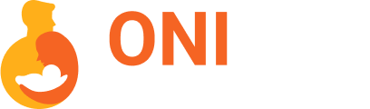
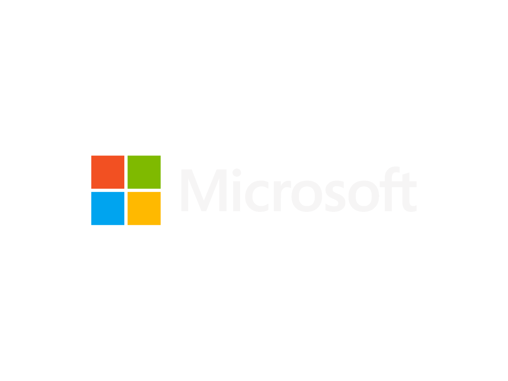

I love creating elegant solutions to complex problems and
crafting beautiful experiences for humans. Educated at the IDC School of Design, IIT Bombay,
I've honed my professional skills at Fractal Ink Design Studio and Microsoft. I'm an incoming Product Designer at Flipkart.
Get in touch to talk about ethical design, films, or my top 10 burger recipes.



Selected Projects

Excel App Maker
| Turning .xls to code
This project aimed to create a no-code app creation platform, powered by Excel's logic engine. The majority of small-medium businesses in India own and operate business data through Excel, and present an untapped business opportunity. This project empowers SMBs to create customized apps for everything from inventory management to payroll & accounting
ConnectPlus is a SaaS community app for professional groups, networks and communities. I worked with the product team to design their new mobile app, website, and documented a comprehensive design system to keep their design future-proof.
Folx helps you find people who love the same places you do, ensuring your dates are always fun, safe, and engaging. I collaborated with the core team to design a modern, unique, and competitive mobile app.
This 48-hour brainstorming project was a part of Sprinklr's internship selection process at IIT Bombay. I learned to manage time, stay focused, and churn out ideas as I pulled out all the stops to meet the deadline.
As a team-based academic project at IIT Bombay, we researched Mumbaikars' food habits to help people build healthy meal plans. This project's final output was an app that we like to describe as "Spotify for Food."